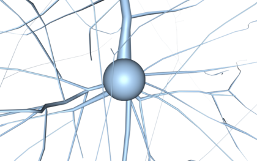
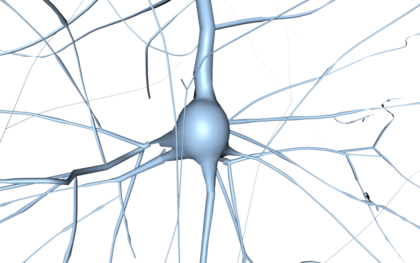
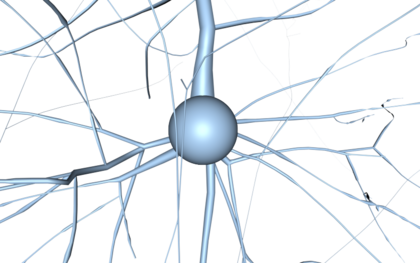
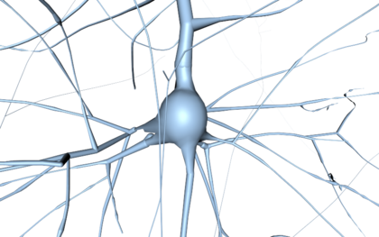
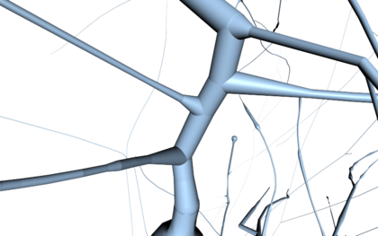
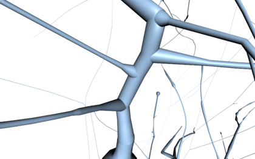

- Generated on Thu Sep 13 2018 07:24:01 for RTNeuron by
 1.8.11
1.8.11
|
RTNeuron
3.0.0
|
RTNeuron implements five levels of detail (LOD) for neurons that can be combined to configure the representation to use for neurons at different distances.
These models are:

Low detail pseudo-cylinders with spherical soma |

High detail pseudo-cylinders with detailed soma |

High detail pseudo-cylinders with spherical soma |
smooth_tublets to true in the AttributeMap passed to RTNeuron.createScene. Driver based antialiasing does not work in this representation due to the raycasting implementation. If the neuron mesh is available, the first order branches start from the points where they end in the detailed soma (so both models are combined). If the mesh is not available or the scene has been created requesting not to load meshes, the first order branches start from the surface of the spherical soma.

Tubelets with detailed soma. |

Close-up of the default tubelet shading. |

Close-up of the smooth tubelet shading. |
All the models for whole morphologies support view frustum culling and branch order culling. More details on both techniques are given in View frustum culling options.
What LODs to use when building the representation of a neuron is a property of Scenes, while which models to choose to render a neuron from a given viewpoint is the combination of View and Scene properties.
When a scene is created manually, it is possible to provide a LOD specification as part of the attribute map that holds the scene parameters. The LOD specification is itself an AttributeMap where the keys and the values are a pair of floating point numbers in the range [0, 1]. This interval is used to decide if a given LOD is visible or not depending on the screen resolution, bounding box of the neuron and its distance to the camera. Smaller values are used when the bounding box projects to a small area on the screen, while higher values are used for large projections (the actual formula used to select if a LOD is visible is an implementation detail and it is subject to change).
An example of manual setup of the LOD specification is given below:
For automatic scenes RTNeuron creates a default LOD specification based on the command line options and provides it to the scene construction. Section Default LOD specifications provide details about it.
display_circuit inside the shell or loading a circuit from the command line with the options -b, --target, --neurons, and -n (--neuron). Manual scenes are those created using RTNeuron.createScene and assigning the Scene manually to a View. Scenes parameters are specified using the AttributeMap passed to RTNeuron.createScene.The environmental variable RTNEURON_LOD_CONFIG_FILE can be set to point to a file that contains a LOD specification to use for automatic scenes. The file may contain a LOD definition per line using this format: lod_name start end. Lines starting with # are ignored. The valid LOD names are the same as those used in the scene attribute map and the start and end values are also numbers between 0 and 1:
To avoid loading meshes, use --no-meshes for automatic scenes or set use_meshes to false in the attribute map passed to RTNeuron.createScene. If meshes are not loaded, the detailed soma model is neither available, and tubelet and pseudo-cylinder first order branches always start from the spherical soma.
Tubelets can be enabled with the command line option --use-tubelets. If provided, the automatic level of detail configuration will replace all references to high detail pseudo-cylinders with tubelets. This option has no effect if --no-lod or --clod are given.
RTNeuron supports a simple implementation of continuous level of detail (CLOD) based on the combination of pseudocylinders and tubelets. The basis of the method is to render both models at the same time and for each morphological segment choose whether to use one model or the other at the geometry processing stage of the GPU pipeline. The selection is based on the thickness of the segment and its distance to the camera.
This is an experimental feature and its performance advantage has not been evaluated yet, however it provides a convenient way of rendering circuits without meshes having an acceptable result for close ups.
To enable CLOD for automatic scenes pass --clod in the command line. For manual scenes set the attribute clod to true in the attribute map neurons which describes the LOD specification.
The default LOD specifications for automatic scenes are equivalent to the following ones:
If meshes are loaded and --clod is not used:
where tubelets is used instead of high_detail_cylinders if the option --use-tubelets is used.
If --no-meshes is given in the command line:
where tubelets is used instead of high_detail_cylinders if the option --use-tubelets is used.
If --clod is given in the command line, the specification is the following regardless of :
where detailed_soma is replaced by spherical_soma if --no-meshes is also provided.
If the option --no-lod is passed in the command line, not LODs are used at all, and all targets to be displayed in detailed representation mode will be rendered using the detailed meshes. This option has the highest prevalence above all the others.
When using the soma only representation mode, morphologies will still be loaded to compute an appropriate sphere radius for each neuron. It is possible to not load morphologies and assign soma radii heuristically instead. In order to do so, use the command line option --no-morphologies for automatic scenes, or set load_morphologies to false in the attribute map passed to RTNeuron.createScene. The soma radii are assigned based on the morphology types as indicated in the following table (all radii in microns):
| Inhibitory cells | Excitatory cells | ||||||||||||||||||||||||||||||||||||||||||||||
|---|---|---|---|---|---|---|---|---|---|---|---|---|---|---|---|---|---|---|---|---|---|---|---|---|---|---|---|---|---|---|---|---|---|---|---|---|---|---|---|---|---|---|---|---|---|---|---|
|
|
For unknown morphology types, a default soma radius of 9 microns is used. This value can be changed for automatic scenes using the command line option --soma-radius number. From the shell, this value can only be changed setting the attribute soma_radius on the attribute map passed to the application object (RTNeuron) constructor.
The default radii table cannot be modified for automatic scenes, but if you instantiate the application object (RTNeuron) manually, you can provide your own one in the AttributeMap passed to the constructor. The table is also an AttributeMap and must be assigned to an attribute named soma_radii. The radii attribute map contains morphological type, radius pairs.
Currently, neither the radii table, nor the unknown type radius can be changed after creating the application object.
table.name = radius. This limitation come be overcome using the alternative syntax table.__setattr__(name, radius).The following code snippet shows an example of this usage and the image below an example of rendering which can be obtained this way:
At runtime the LOD bias can be adjusted in a per view basis. This parameter is a View attribute called lod_bias and accessed from View.attributes.
The LOD bias is a value in the range [0, 1] which is transformed internally in a value in the range [0, +inf), where 0.5 maps to 1. This bias is applied during LOD selection as a multiplicative to factor of the screen area covered by each bounding box.
REVIEW
REVIEW
REVIEW
1.8.11